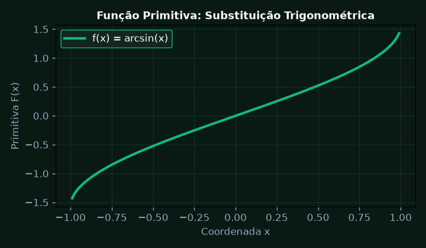
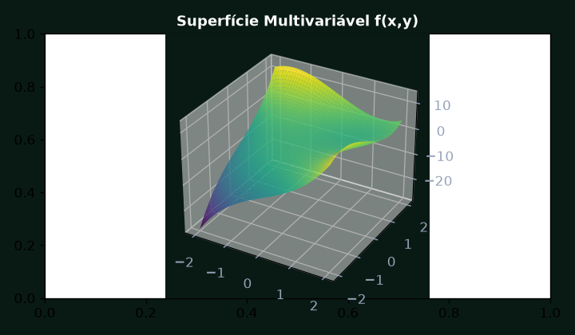
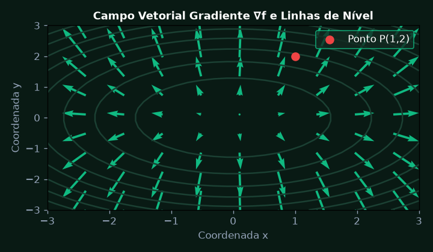
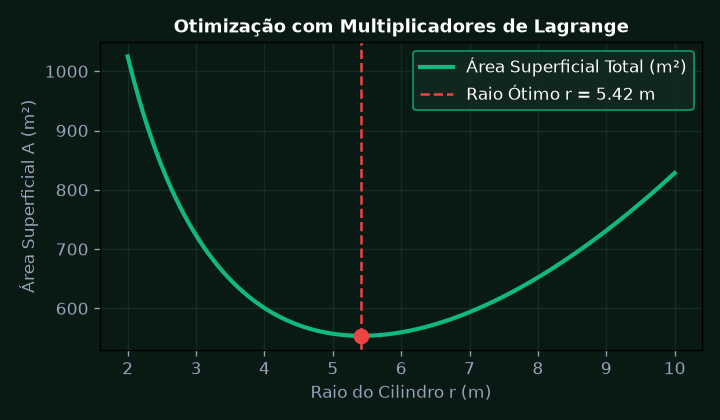
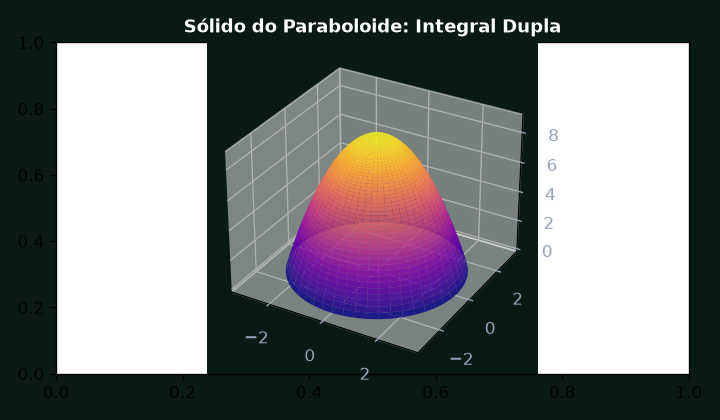
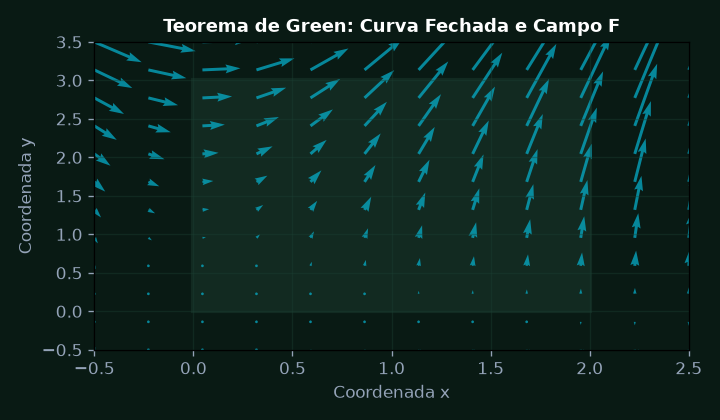

Integração por Substituição Trigonométrica e Frações Parciais
Calcular a integral indefinida de fluxo de calor e campo magnético utilizando a técnica de substituição trigonométrica para expressões da forma sqrt(a^2 - u^2).
💎 Resolução Algébrica Passo a Passo (Padrão Symbolab)
Para a expressão \sqrt{a^2 - x^2}, definimos x = a \sin\theta, com -\frac{\pi}{2} \le \theta \le \frac{\pi}{2}.
O diferencial dx = a \cos\theta \, d\theta.
\sqrt{a^2 - x^2} = \sqrt{a^2 - a^2\sin^2\theta} = a\sqrt{1 - \sin^2\theta} = a \cos\theta.
\int \frac{a \cos\theta \, d\theta}{a \cos\theta} = \int d\theta = \theta + C.
Como \sin\theta = \frac{x}{a}, temos \theta = \arcsin\left(\frac{x}{a}\right). Portanto, o resultado formal é \arcsin\left(\frac{x}{a}\right) + C.

Funções de Várias Variáveis e Derivadas Parciais de Primeira e Segunda Ordem
Analisar a superfície térmica de dispersão f(x, y) = x^3 + y^3 - 3xy e determinar todas as derivadas parciais primeiras e segundas, validando o Teorema de Clairaut-Schwarz.
💎 Resolução Algébrica Passo a Passo (Padrão Symbolab)
\frac{\partial f}{\partial x} = 3x^2 - 3y \quad \text{e} \quad \frac{\partial f}{\partial y} = 3y^2 - 3x.
\frac{\partial^2 f}{\partial x^2} = 6x \quad \text{e} \quad \frac{\partial^2 f}{\partial y^2} = 6y.
\frac{\partial}{\partial y}\left(\frac{\partial f}{\partial x}\right) = \frac{\partial}{\partial y}(3x^2 - 3y) = -3.
\frac{\partial}{\partial x}\left(\frac{\partial f}{\partial y}\right) = \frac{\partial}{\partial x}(3y^2 - 3x) = -3. Como são contínuas em \mathbb{R}^2, f_{xy} = f_{yx}.
A simetria das derivadas mistas confirma o comportamento suave e contínuo do potencial de dispersão térmica.

Vetor Gradiente e Derivada Direcional
Calcular o vetor gradiente da função de potencial f(x, y) = 2x^2 + 3y^2 no ponto P(1, 2) e determinar a derivada direcional na direção do vetor unitário u que maximiza a taxa de variação.
💎 Resolução Algébrica Passo a Passo (Padrão Symbolab)
\nabla f(x, y) = (4x)\mathbf{i} + (6y)\mathbf{j}.
\nabla f(1, 2) = (4 \cdot 1)\mathbf{i} + (6 \cdot 2)\mathbf{j} = 4\mathbf{i} + 12\mathbf{j}.
\|\nabla f(1, 2)\| = \sqrt{4^2 + 12^2} = \sqrt{16 + 144} = \sqrt{160} = 4\sqrt{10} \approx 12,65.
\mathbf{u} = \frac{\nabla f}{\|\nabla f\|} = \left(\frac{4}{\sqrt{160}}, \frac{12}{\sqrt{160}}\right) = \left(\frac{1}{\sqrt{10}}, \frac{3}{\sqrt{10}}\right).
A taxa máxima de crescimento no ponto P(1,2) ocorre na direção do gradiente e possui intensidade exata de 4\sqrt{10} unidades.

Otimização com Vínculos: Multiplicadores de Lagrange
Determinar as dimensões de um reservatório cilíndrico de volume fixo V = 1.000 m^3 que minimiza a área superficial total de material usando os Multiplicadores de Lagrange.
💎 Resolução Algébrica Passo a Passo (Padrão Symbolab)
Objetivo: A(r, h) = 2\pi r^2 + 2\pi rh. Vínculo: g(r, h) = \pi r^2 h - V_0 = 0.
\nabla A = (4\pi r + 2\pi h, 2\pi r) \quad \text{e} \quad \lambda \nabla g = \lambda(2\pi rh, \pi r^2).
1) 4\pi r + 2\pi h = 2\lambda\pi rh \implies 2r + h = \lambda rh; \quad 2) 2\pi r = \lambda\pi r^2 \implies \lambda = \frac{2}{r}.
Substituindo \lambda na 1ª equação: 2r + h = \left(\frac{2}{r}\right)rh = 2h \implies h = 2r (altura igual ao diâmetro).
V_0 = \pi r^2(2r) = 2\pi r^3 = 1000 \implies r = \sqrt[3]{\frac{500}{\pi}} \approx 5,42 \text{ m e } h \approx 10,84 \text{ m}.

Integrais Duplas em Coordenadas Polares
Calcular o volume de um sólido limitado superiormente pelo paraboloide z = 9 - x^2 - y^2 e inferiormente pelo plano z = 0 usando integral dupla em coordenadas polares.
💎 Resolução Algébrica Passo a Passo (Padrão Symbolab)
Definimos x = r\cos\theta, y = r\sin\theta, portanto x^2 + y^2 = r^2 e o elemento diferencial de área dA = r \, dr \, d\theta.
Para z = 0, temos 9 - r^2 = 0 \implies r = 3. Logo, r \in [0, 3] e \theta \in [0, 2\pi].
V = \int_0^{2\pi} \left[ \int_0^3 (9r - r^3) \, dr \right] d\theta.
\int_0^3 (9r - r^3) \, dr = \left[ \frac{9r^2}{2} - \frac{r^4}{4} \right]_0^3 = \frac{81}{2} - \frac{81}{4} = \frac{81}{4}.
V = \int_0^{2\pi} \frac{81}{4} \, d\theta = \frac{81}{4}(2\pi) = \frac{81\pi}{2} \approx 127,23 \text{ unidades de volume}.

Integrais de Linha e Teorema de Green no Plano
Calcular o trabalho realizado pelo campo de forças F(x, y) = (y^2, 3xy) ao longo da curva fechada C orientada no sentido anti-horário em torno do retângulo unitário [0, 2] x [0, 3] aplicando o Teorema de Green.
💎 Resolução Algébrica Passo a Passo (Padrão Symbolab)
P(x, y) = y^2 \quad \text{e} \quad Q(x, y) = 3xy.
\frac{\partial Q}{\partial x} = 3y \quad \text{e} \quad \frac{\partial P}{\partial y} = 2y \implies \frac{\partial Q}{\partial x} - \frac{\partial P}{\partial y} = 3y - 2y = y.
\oint_C F \cdot dr = \int_0^2 \int_0^3 y \, dy \, dx.
\int_0^3 y \, dy = \left[ \frac{y^2}{2} \right]_0^3 = \frac{9}{2}.
W = \int_0^2 \frac{9}{2} \, dx = \frac{9}{2} \times 2 = 9 \text{ Joules de trabalho líquido}.
